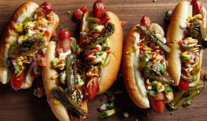

Fire Dogs

Description
Hot dogs - but hotter.
Ingredients
- 4 hot dogs
- 4 hot dog buns
- 1 diced onion
- 4 jalapeño peppers
- hot sauce of choice
Steps
- Preheat an air fryer to 400 degrees F (200 degrees C).
- Cut stem end off of jalapeños. Cut jalapeños in half long ways as symatrical as possible.
- Place buns in a single layer in the air fryer basket; cook in the preheated air fryer until crisp, about 2 minutes. Remove buns to a plate.
- Place jalapeños and hot dogs in a single layer in the air fryer basket; cook for 3 minutes.
- Serve hot dogs in toasted buns with a jalapeño half on each side of each hot dog. Sprinkle onions and pour on hot sauce to taste.